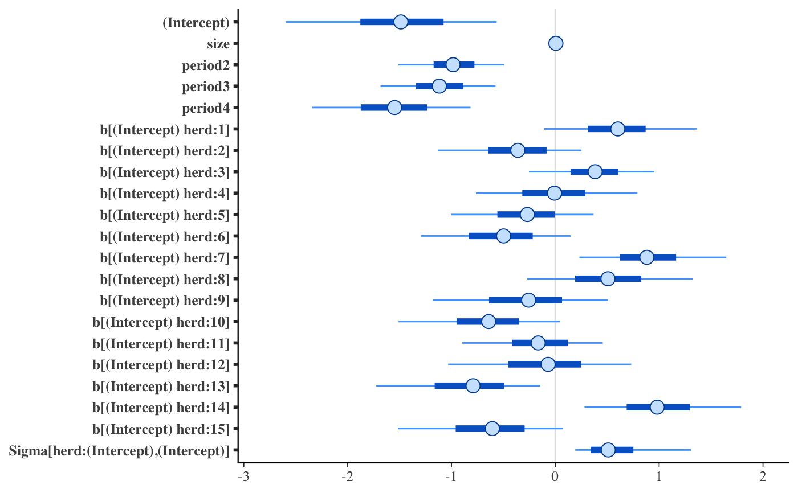

The plot method for stanreg-objects provides a convenient
interface to the MCMC module in the
bayesplot package for plotting MCMC draws and diagnostics. It is also
straightforward to use the functions from the bayesplot package directly rather than
via the plot method. Examples of both methods of plotting are given
below.
Usage
# S3 method for class 'stanreg'
plot(x, plotfun = "intervals", pars = NULL, regex_pars = NULL, ...)Arguments
- x
A fitted model object returned by one of the rstanarm modeling functions. See
stanreg-objects.- plotfun
A character string naming the bayesplot MCMC function to use. The default is to call
mcmc_intervals.plotfuncan be specified either as the full name of a bayesplot plotting function (e.g."mcmc_hist") or can be abbreviated to the part of the name following the"mcmc_"prefix (e.g."hist"). To get the names of all available MCMC functions seeavailable_mcmc.- pars
An optional character vector of parameter names.
- regex_pars
An optional character vector of regular expressions to use for parameter selection.
regex_parscan be used in place ofparsor in addition topars. Currently, all functions that accept aregex_parsargument ignore it for models fit using optimization.- ...
Additional arguments to pass to
plotfunfor customizing the plot. These are described on the help pages for the individual plotting functions. For example, the arguments accepted for the defaultplotfun="intervals"can be found atmcmc_intervals.
Value
Either a ggplot object that can be further customized using the
ggplot2 package, or an object created from multiple ggplot objects
(e.g. a gtable object created by arrangeGrob).
References
Gabry, J. , Simpson, D. , Vehtari, A. , Betancourt, M. and Gelman, A. (2019), Visualization in Bayesian workflow. J. R. Stat. Soc. A, 182: 389-402. doi:10.1111/rssa.12378, arXiv preprint, code on GitHub)
See also
The vignettes in the bayesplot package for many examples.
MCMC-overview(bayesplot) for links to the documentation for all the available plotting functions.color_scheme_set(bayesplot) to change the color scheme used for plotting.pp_checkfor graphical posterior predictive checks.plot_nonlinearfor models with nonlinear smooth functions fit usingstan_gamm4.
Examples
if (.Platform$OS.type != "windows" || .Platform$r_arch != "i386") {
# \donttest{
# Use rstanarm example model
if (!exists("example_model")) example(example_model)
fit <- example_model
#####################################
### Intervals and point estimates ###
#####################################
plot(fit) # same as plot(fit, "intervals"), plot(fit, "mcmc_intervals")
p <- plot(fit, pars = "size", regex_pars = "period",
prob = 0.5, prob_outer = 0.9)
p + ggplot2::ggtitle("Posterior medians \n with 50% and 90% intervals")
# Shaded areas under densities
bayesplot::color_scheme_set("brightblue")
plot(fit, "areas", regex_pars = "period",
prob = 0.5, prob_outer = 0.9)
# Make the same plot by extracting posterior draws and calling
# bayesplot::mcmc_areas directly
x <- as.array(fit, regex_pars = "period")
bayesplot::mcmc_areas(x, prob = 0.5, prob_outer = 0.9)
# Ridgelines version of the areas plot
bayesplot::mcmc_areas_ridges(x, regex_pars = "period", prob = 0.9)
##################################
### Histograms & density plots ###
##################################
plot_title <- ggplot2::ggtitle("Posterior Distributions")
plot(fit, "hist", regex_pars = "period") + plot_title
plot(fit, "dens_overlay", pars = "(Intercept)",
regex_pars = "period") + plot_title
####################
### Scatterplots ###
####################
bayesplot::color_scheme_set("teal")
plot(fit, "scatter", pars = paste0("period", 2:3))
plot(fit, "scatter", pars = c("(Intercept)", "size"),
size = 3, alpha = 0.5) +
ggplot2::stat_ellipse(level = 0.9)
####################################################
### Rhat, effective sample size, autocorrelation ###
####################################################
bayesplot::color_scheme_set("red")
# rhat
plot(fit, "rhat")
plot(fit, "rhat_hist")
# ratio of effective sample size to total posterior sample size
plot(fit, "neff")
plot(fit, "neff_hist")
# autocorrelation by chain
plot(fit, "acf", pars = "(Intercept)", regex_pars = "period")
plot(fit, "acf_bar", pars = "(Intercept)", regex_pars = "period")
##################
### Traceplots ###
##################
# NOTE: rstanarm doesn't store the warmup draws (to save space because they
# are not so essential for diagnosing the particular models implemented in
# rstanarm) so the iterations in the traceplot are post-warmup iterations
bayesplot::color_scheme_set("pink")
(trace <- plot(fit, "trace", pars = "(Intercept)"))
# change traceplot colors to ggplot defaults or custom values
trace + ggplot2::scale_color_discrete()
trace + ggplot2::scale_color_manual(values = c("maroon", "skyblue2"))
# changing facet layout
plot(fit, "trace", pars = c("(Intercept)", "period2"),
facet_args = list(nrow = 2))
# same plot by calling bayesplot::mcmc_trace directly
x <- as.array(fit, pars = c("(Intercept)", "period2"))
bayesplot::mcmc_trace(x, facet_args = list(nrow = 2))
############
### More ###
############
# regex_pars examples
plot(fit, regex_pars = "herd:1\\]")
plot(fit, regex_pars = "herd:[279]")
plot(fit, regex_pars = "herd:[279]|period2")
plot(fit, regex_pars = c("herd:[279]", "period2"))
# }
# For graphical posterior predictive checks see
# help("pp_check.stanreg")
}
#> Scale for colour is already present.
#> Adding another scale for colour, which will replace the existing scale.
#> Scale for colour is already present.
#> Adding another scale for colour, which will replace the existing scale.
